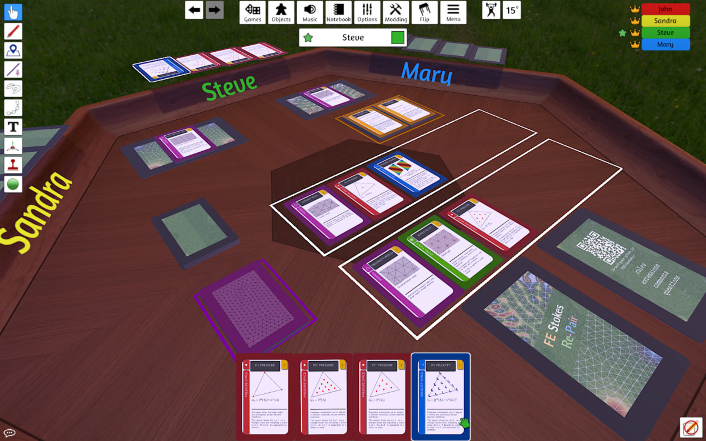

We will have a remote game night on January 9th 2025, starting at 18:30 CET. If you are interested in playing with us (or just chatting or observing), join our → video chat.
Note that we will use → our TableTop simulator Mod for playing online, i.e. you will need to purchase and install → TableTop simulator beforehand (through Steam).

Do you want to have a quick introduction to FE Stokes Re-Pair (including the rules) on your ears? Listen to a NotebookLM generated Podcast on it:
The rules of the game are described here.
In the game Stokes discretizations are composed. To check if a discretization is indeed stable, optimally convergent and/or pressure robust you can have a look at the cheat sheet / look-up table.
We are working on a validator web app where you can enter your card combination/discretization and obtain the required information.
We are still in the progress of polishing the material for sharing it also for modifications.
The card game is uploaded to printerstudio.de and you can purchase it here.
Alternatively, you can download the card game here for (double-sided) printing and cutting it afterwards.
For more information and further material, for the moment contact us at fe.nerd.games@gmail.com for further details.
Wanna play remotely online? We have an unpolished Mod for the "Tabletop simulator" that you can get on Steam. Our Mod can be found here. Here is a screenshot: 
You found a mistake in the rules or cards or see a flaw or have a nice idea for extensions, e.g. a Poker version of the game? Contact us at fe.nerd.games@gmail.com or directly open an issue at github.